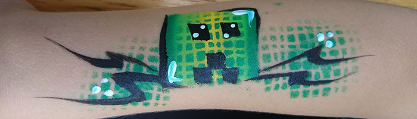
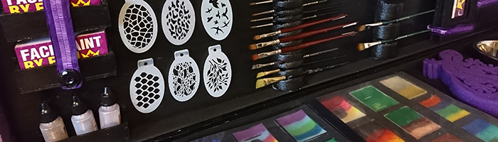

Professional Face Painting in Southern Ontario
Entertain the guests at your next event by booking a Professional Face Painter! You can rest easy knowing your artist is fully insured and uses only the best, skin-safe products in the industry. With over 10 years of experience entertaining at 200+ events, your artist brings the skills to deliver top-notch service that's sure to amaze your guests, bringing their imagination to life.
Services are available to the Halton, Hamilton, Greater Toronto Area and Niagara Regions.
custom built face painting kit
Over the years, I custom-built my own face painting kit and filled it with vibrant colours, paints, brushes and other tools. The custom layout of my kit allows me to perform a variety of painting techniques with a refined speed from years of experience working both large-scale public events and small-scale private parties. With my art and design background, I can paint nearly anything you can imagine or replicate from a photo. My specialties are painting animals, super heroes and logos.
